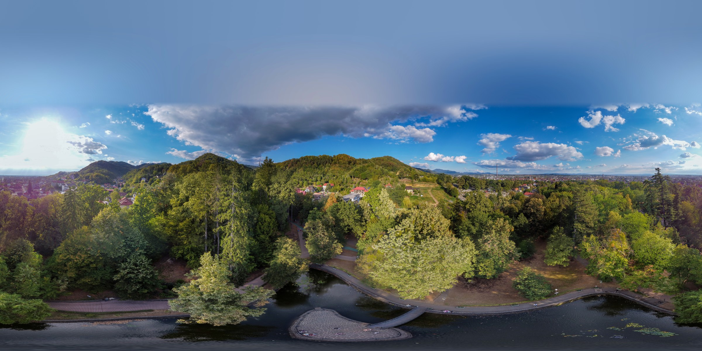
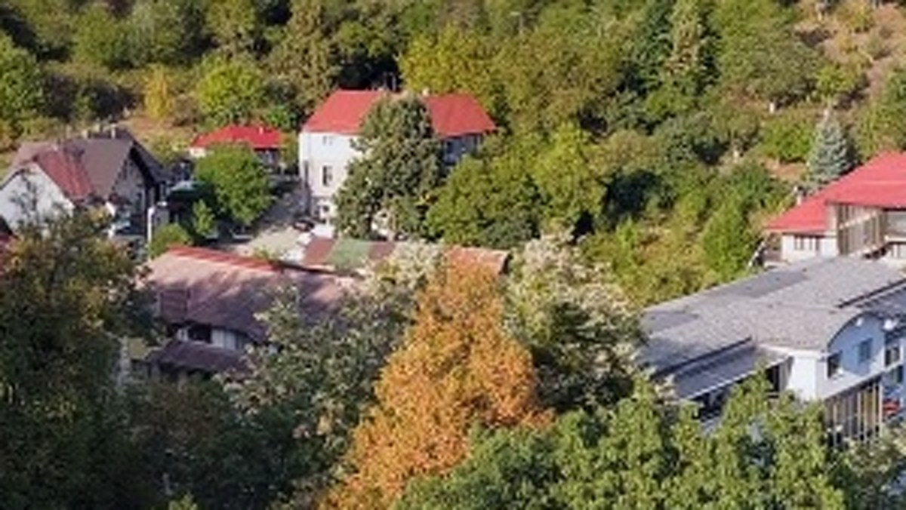
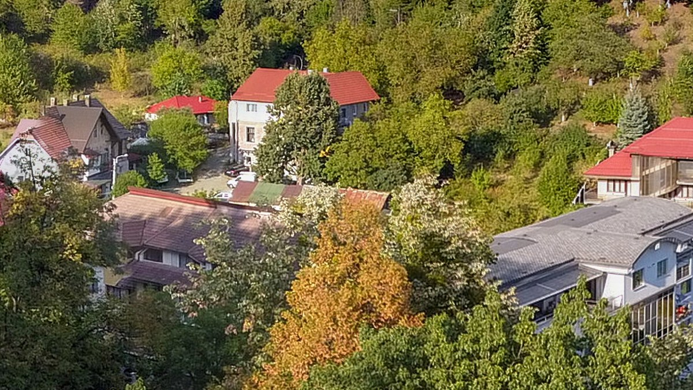
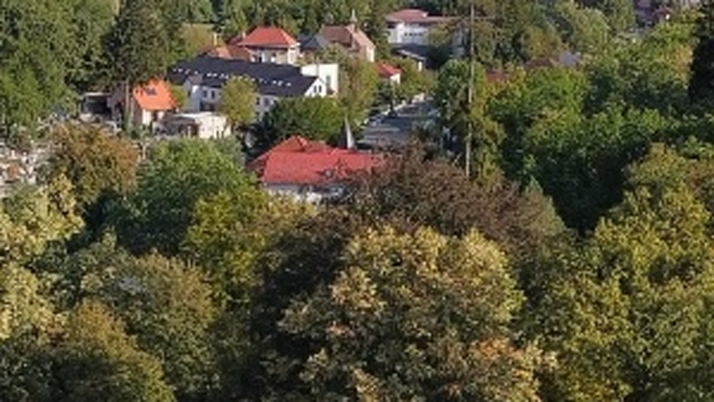
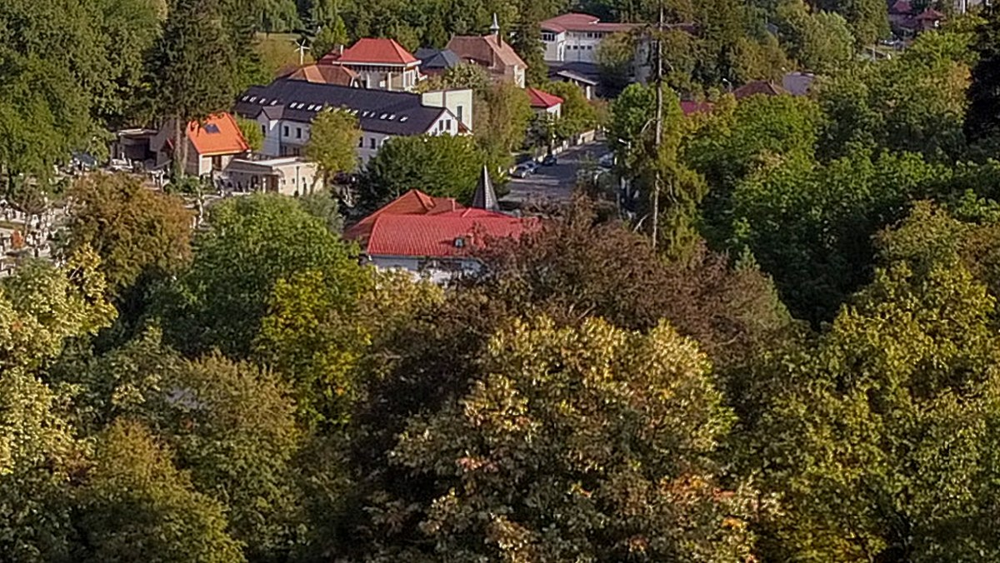
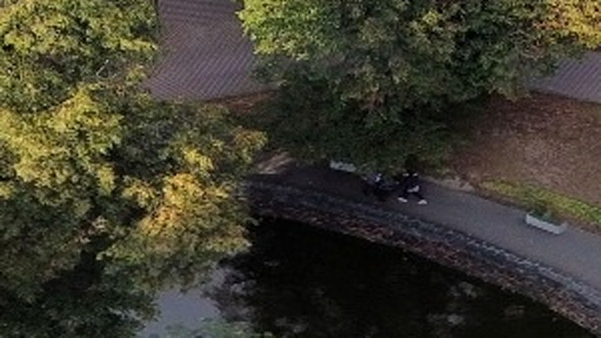
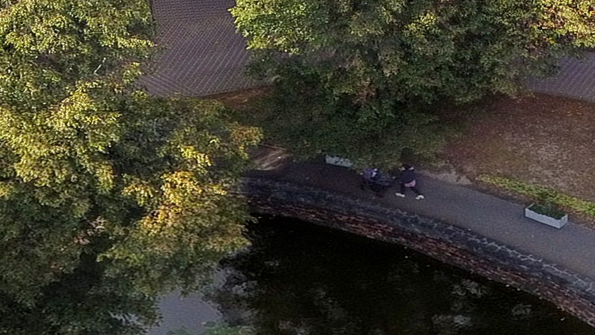
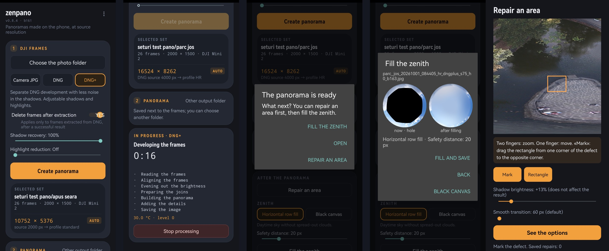
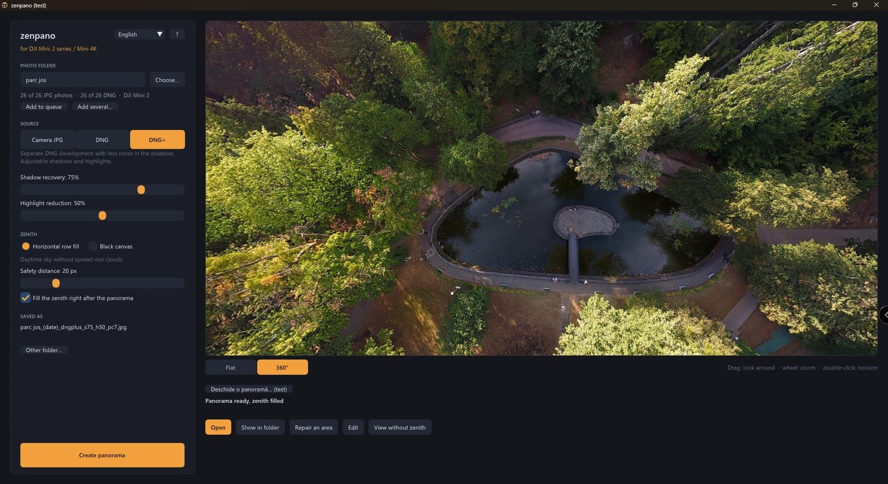

For every sphere the drone also saves 26 DNG files. zenpano builds the panorama from them, on your phone: far more information than the original JPGs, more freedom for a quick edit, and 16384 px wide instead of 4096.

Park, 36 m above ground · 26 DNG frames · 16384 × 8192 · made on the phone, cap closed
Same flight, same spot, zoomed in. Left: the panorama saved by the DJI Fly app. Right: zenpano.


DJI Flyzenpano

DJI Flyzenpano

DJI FlyzenpanoChoose the folder, pick the source, tap once. When the sphere is ready, repair a seam if you need to and close the sky, all in the same app.


Free trial: no limit on panoramas, but each one carries a «zenpano · trial» watermark. A licence key removes it — ask for one in the feedback form.
Installs outside the Play Store: allow «install from unknown sources» when Android asks.
A single .exe, no install. Windows SmartScreen may warn: «More info» → «Run anyway».
zenpano runs on Android and on Windows. If you fly a Mini 2, Mini 2 SE or Mini 4K and want to try it, or have sphere sets from a Mini 3 or Mini 4 Pro to share, tell us in a short form:
Give feedback · 2 minutes